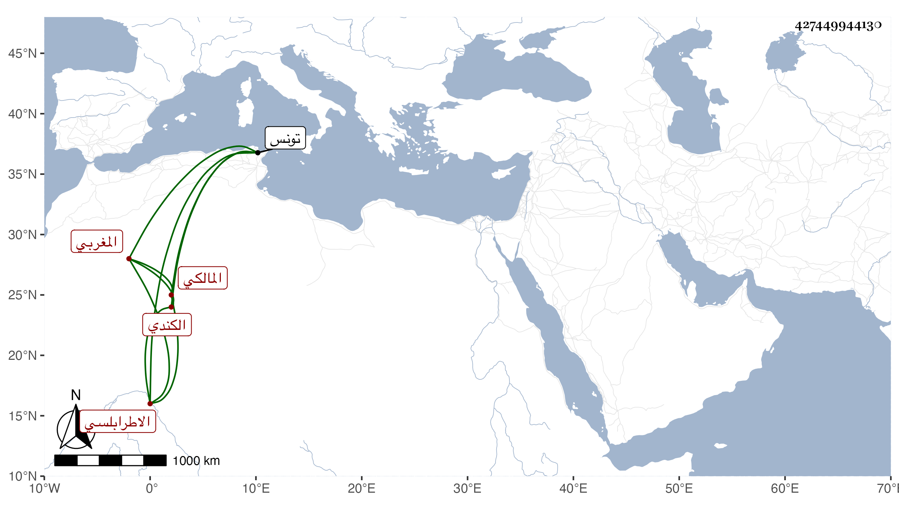

0902Sakhawi.DawLamic.ITO20230111-ara1.EIS1600.427449944130
Biography ID: 427449944130
849
عبد الكريم بن عبد الغني بن إبراهيم بن عبد الله بن مزيد بن يزيد ابن زعازع بن كامل بن عنان المحب الكندي الورفلي الاطرابلسي المغربي المالكي وورفلة براء ساكنة ثم فاء مفتوحة ولام مشددة من نواحي تونس . ولد سنة ست وثمانمائة وحفظ القرآن واشتغل فأخذ عن أبي القسم البرزلي وقاضي الجماعة أبي القسم القسنطيني وغيرهما وقدم علينا حاجا فكتبت عنه في صفر سنة إحدى وخمسين ما أنشدنيه لفظا عن صاحبه الأديب مؤرخ المغرب منصور الجريري فيما أنشده لنفسه في واقعة قال وهو الآن في قيد الحياة :
| لئن طال خفضي عند خدام بابكم | ولم تؤثروا بالرفع إلا مخازني |
| سأنفق عمري في حساب زمانكم | وأغلق عن كسب العلوم مخازني |
وكان فاضلا فصيحا . مات بعد ذلك .
